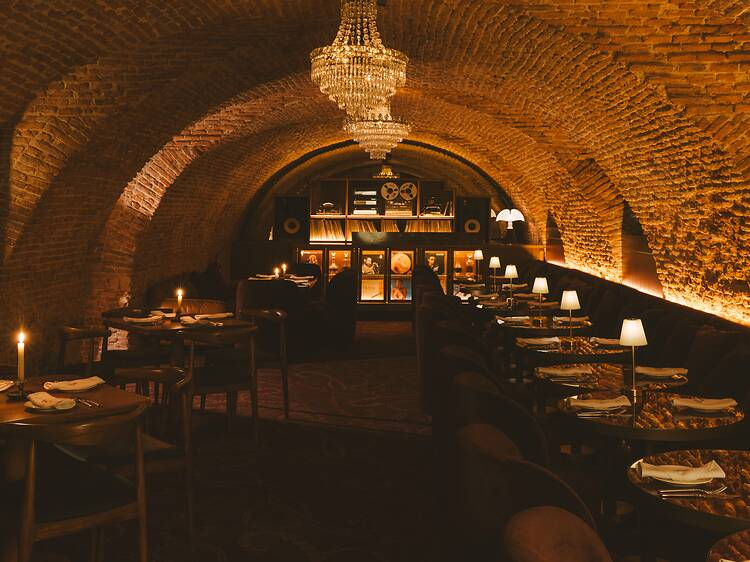

Bienvenidos a nuestro restaurante.
Ofrecemos la mejor cocina tradicional española
en un ambiente
acogedor y exclusivo en el corazón de Córdoba.

Disfrute de una experiencia gastronómica única en un entorno histórico.
Nuestros platos están elaborados con ingredientes frescos de la más alta calidad,
siguiendo las recetas tradicionales con un toque moderno.